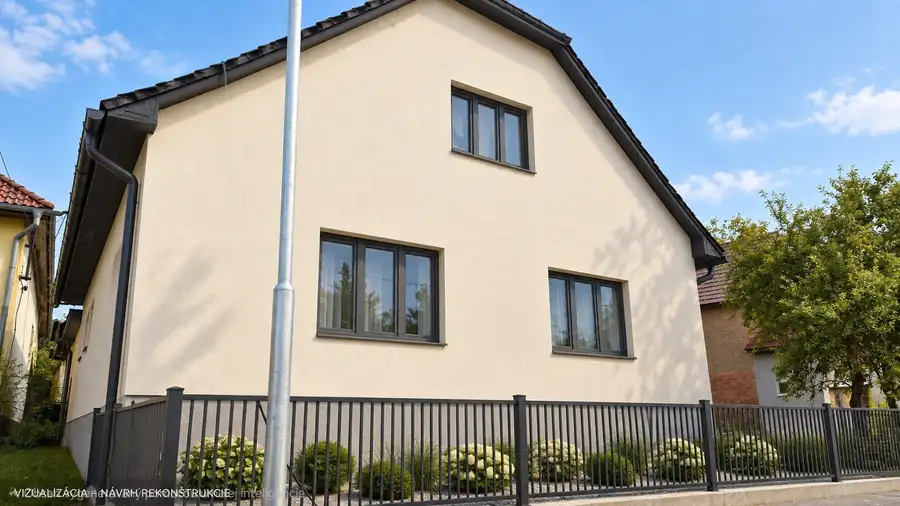
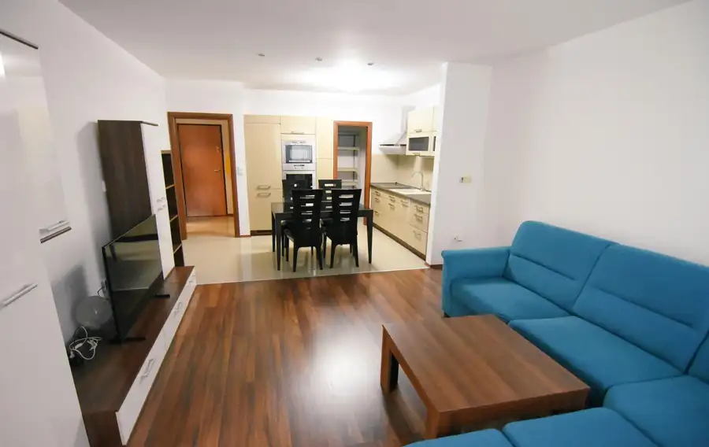
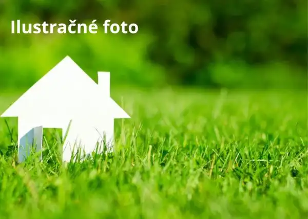
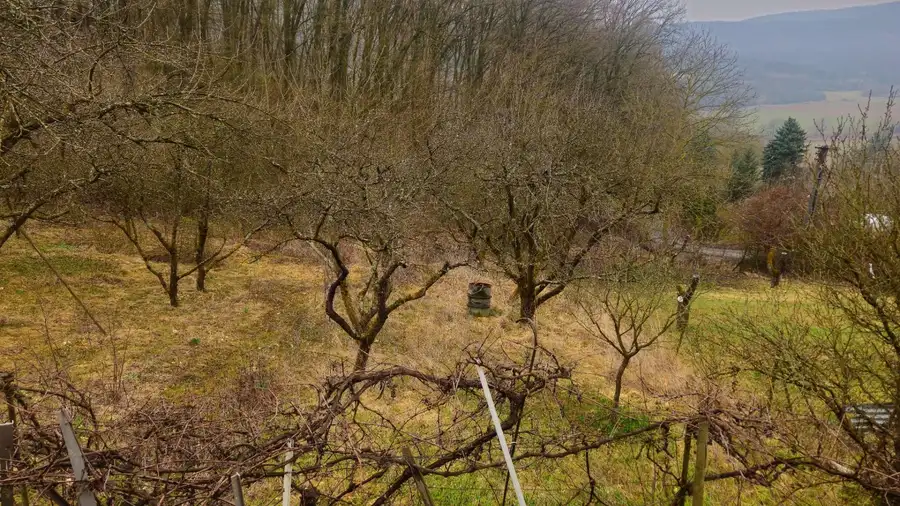

Aktuálna ponuka
9 nehnuteľností, predovšetkým rodinné domy, byty, chaty a chalupy. Každá má vlastnú stránku s fotkami, popisom a mapou.
Prezrieť ponuku
Mária FürstenRealitná maklérka
Realitná maklérka · VAŠE REALITY s. r. o.
Predaj a prenájom nehnuteľností · Trenčín, Hlohovec, Trenčianske Teplice

 Rodinné domy10
98 500 €Predaj 4 izbový rodinný dom Šulekovo
Hlohovec
4-izbový366 m²
UNIKÁTNA MOŽNOSŤ V HLOHOVCI – ŠULEKOVO! 4-IZBOVÝ DOM S VEĽKOU ZÁHRADOU NA VLASTNÚ VÍZIU! VAŠE REALITY v zastúpení majiteľa ponúka na predaj 4-izbový…
Byt8
149 990 €Predaj 4-izbový byt 87 m² | Trenčianske teplice | výborná lokalita |
Trencianske-teplicesnp, Trenčianske TepliceSNP
4-izbový87 m²
Vaše Reality ponúkajú na predaj 4-izbový byt s výmerou 87 m² vo vyhľadávanej a príjemnej lokalite Trenčianskych Teplíc. Byt sa nachádza na 1.…
Rodinné domy10
359 990 €Rodinný dom s dvomi bytovými jednotkami – inovecká ulica, Trenčín
Trenčín
6-izbový180 m²
Cena: 359990 € Realitná kancelária VAŠE REALITY ponúka na predaj priestranný tehlový rodinný dom vo vyhľadávanej a dobre dostupnej lokalite na…
Rodinné domy10
98 500 €Predaj 4 izbový rodinný dom Šulekovo
Hlohovec
4-izbový366 m²
UNIKÁTNA MOŽNOSŤ V HLOHOVCI – ŠULEKOVO! 4-IZBOVÝ DOM S VEĽKOU ZÁHRADOU NA VLASTNÚ VÍZIU! VAŠE REALITY v zastúpení majiteľa ponúka na predaj 4-izbový…
Byt8
149 990 €Predaj 4-izbový byt 87 m² | Trenčianske teplice | výborná lokalita |
Trencianske-teplicesnp, Trenčianske TepliceSNP
4-izbový87 m²
Vaše Reality ponúkajú na predaj 4-izbový byt s výmerou 87 m² vo vyhľadávanej a príjemnej lokalite Trenčianskych Teplíc. Byt sa nachádza na 1.…
Rodinné domy10
359 990 €Rodinný dom s dvomi bytovými jednotkami – inovecká ulica, Trenčín
Trenčín
6-izbový180 m²
Cena: 359990 € Realitná kancelária VAŠE REALITY ponúka na predaj priestranný tehlový rodinný dom vo vyhľadávanej a dobre dostupnej lokalite na…
 Byt10
155 000 €Na predaj | moderný 2-izbový byt 57 m² | orion – centrum Dubnice nad v
Dubnica nad Váhom
2-izbový57 m²8. podlažie
Realitná kancelária Vaše reality ponúka na predaj moderný a priestranný 2-izbový byt s výmerou 57 m², ktorý sa nachádza v atraktívnej polyfunkčnej…
Byt10
155 000 €Na predaj | moderný 2-izbový byt 57 m² | orion – centrum Dubnice nad v
Dubnica nad Váhom
2-izbový57 m²8. podlažie
Realitná kancelária Vaše reality ponúka na predaj moderný a priestranný 2-izbový byt s výmerou 57 m², ktorý sa nachádza v atraktívnej polyfunkčnej…
 Rodinné domy10
135 000 €2-izbový rodinný dom po rekonštrukcii – Červeník
Červeník
2-izbový67 m²
Útulný dom pre pokojné bývanie bez starostí Vaše Reality ponúkajú v zastúpení majiteľa na predaj menší, útulný rodinný dom, ideálny pre človeka,…
Rodinné domy10
135 000 €2-izbový rodinný dom po rekonštrukcii – Červeník
Červeník
2-izbový67 m²
Útulný dom pre pokojné bývanie bez starostí Vaše Reality ponúkajú v zastúpení majiteľa na predaj menší, útulný rodinný dom, ideálny pre človeka,…

Rodinné domy10 110 000 €Dva rodinné domy, na pozemku 763 m² – Horná Breznica Horná Breznica 2-izbový107 m² Vlastná záhrada, priestor na drobné hospodárenie a dva domy, ktorým môžete dať nový život. Vaše reality ponúka na predaj nehnuteľnosť v obci Horná…
Byt9 Cena dohodou2 izbový byt na prenájom Dolný Šianec Trenčín 2-izbový58 m²1. podlažie VAŠE REALITY v zastúpení majiteľa nehnuteľnosti ponúkajú na dlhodobý prenájom štýlový a kompletne zariadený 2-izbový byt s podzemným parkovacím…
Pozemok 106 996 €Pozemok na predaj 2330m2 Lednické Rovné Lednické Rovne 2326 m² EXKLUZÍVNA PONUKA - VAŠE REALITY - realitná kancelária Vám v exkluzívnom zastúpení ponúka na predaj pozemok s výmerou 2330 m2, určený na výstavbu…
Chaty a chalupyRezervované8 37 000 €Záhradná chatka Trenčianske Teplice Trenčianske Teplice 1-izbový24 m² VAŠE REALITY - realitná kancelária . Predáva v exkluzívnom zastúpení majiteľa záhradnú chatku s pozemkom 758m2, v krásnom prostredí mesta Trenčianske…Tomuto výberu zatiaľ nezodpovedá žiadna ponuka. Napíšte mi, čo hľadáte.
Volám sa Mária Fürsten. Som realitná maklérka kancelárie VAŠE REALITY s. r. o. a pôsobím predovšetkým v lokalitách Trenčín, Hlohovec, Trenčianske Teplice a Trenčianske TepliceSNP (Trenčiansky kraj).
9 nehnuteľností, predovšetkým rodinné domy, byty, chaty a chalupy. Každá má vlastnú stránku s fotkami, popisom a mapou.
Prezrieť ponukuTrenčín, Hlohovec, Trenčianske Teplice, Trenčianske TepliceSNP, Dubnica nad Váhom a okolie. Ponuku si môžete prezrieť podľa lokality.
Nehnuteľnosti v lokaliteOdhad trhovej ceny, príprava prezentácie, obhliadky, zmluvy a odovzdanie nehnuteľnosti.
Dohodnúť stretnutie
Na čo sa pýtate najčastejšie, skôr než sa stretneme.
Odhad trhovej ceny vychádza z aktuálnych ponúk a predajov v lokalite, nie z cenníkových tabuliek. Podmienky Vám poviem pri prvom telefonáte.
Najprv obhliadka a odhad ceny, potom príprava prezentácie (fotografie, popis, inzercia), obhliadky so záujemcami, rezervačná zmluva, kúpna zmluva, návrh na vklad do katastra a odovzdanie nehnuteľnosti. O každom kroku viete vopred.
Najrýchlejšie cez WhatsApp alebo telefón. Termín stretnutia alebo obhliadky dohodneme podľa Vás.